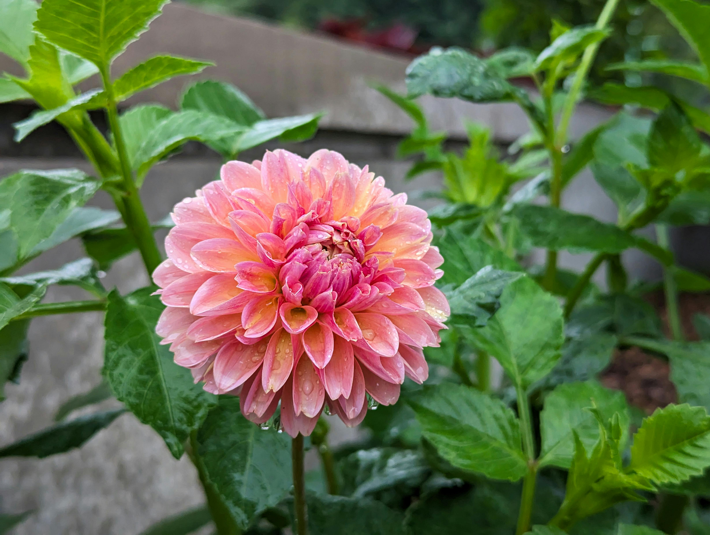

This month
The first frost, and what it asks of you.
By Gardn Labs Limited · 2 June 2026 · 4 min read

There’s a particular evening every year when the forecast finally dips to zero. The light goes flat, the air sharpens, and the garden needs you for an hour. Here’s what that hour is for.
Read the forecast, not the calendar.
Frost doesn’t arrive by the date. It arrives when a clear, still night lets the ground give up its heat — which is why a sheltered town garden and an exposed hillside on the same street can differ by a couple of degrees. What matters is the temperature in your spot, overnight, not the season on the page.
If the forecast for your postcode shows 2°C or below by dawn, treat it as a frost night. Cloud and wind both hold the cold off; a clear, calm sky is the warning sign.
Bring in what can’t take it.
The tender things go first: pelargoniums, tender salvias, anything in a pot you’d be sorry to lose. A porch, a shed, even up against the house wall buys a few degrees. Dahlias can stay in the ground a while longer in milder spots, but the first hard frost blackens the foliage — that’s your cue to cut them back and think about lifting.
The rule of thumb: if you bought it as a houseplant’s hardier cousin, it probably wants to come in.
Leave what’s earned its rest.
Plenty of the garden is fine, and fussing over it does more harm than good. Established shrubs, most perennials, anything described as hardy — leave them be. Seed heads and old stems give shelter to insects through winter and look quietly good under frost. A tidy garden isn’t always a healthy one.
What Gardn does on a night like this.
This is exactly the moment Gardn is built for. It watches the overnight forecast for your postcode, checks it against the plants you’ve logged and where they sit, and — only when it matters — tells you which pots are at risk and how many. One clear nudge, in time to act, then quiet again until the cold passes.
You can’t be in the garden every evening. Gardn can keep half an eye on it for you.